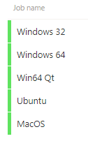
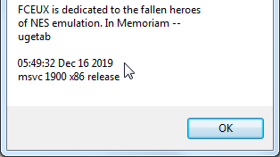
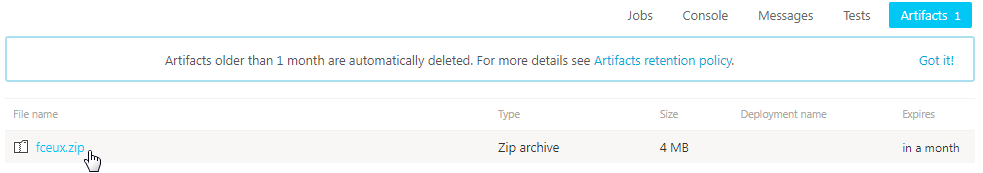

Содержание
Скачай свежую сборку эмулятора. Время от времени она обновляется.

Эта сборка содержит в себе множество полезных изменений и багфиксов, в отличие от последней версии 2.2.3 на официальном сайте, которая не обновлялась уже несколько лет.
Все статьи написаны с учетом того, что у тебя тоже есть эта сборка.
Дату компиляции версии эмулятора можно посмотреть в Help -> About.

Если у тебя уже есть FCEUX, достань из архива файл fceux.exe и замени у себя в корневой папке эмулятора.

После обновления твои настройки останутся без изменений. Они хранятся в файле fceux.cfg. Этот файл автоматически создается/обновляется после закрытия эмулятора.
Возможно потребуется перенастроить управление для 3-го и 4-го игрока при первом обновлении с версии 2.2.2 или 2.2.3.
Единственной альтернативой FCEUX является эмулятор Mesen.